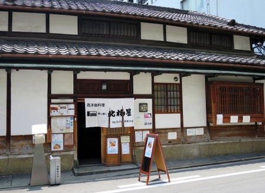
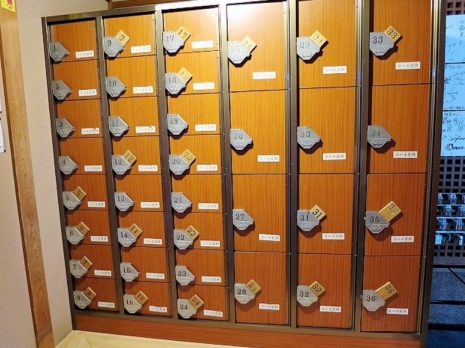
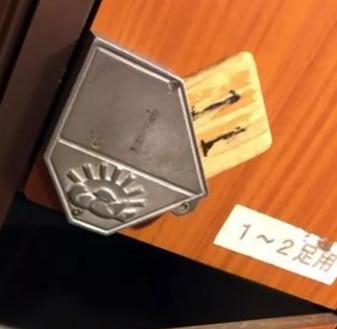
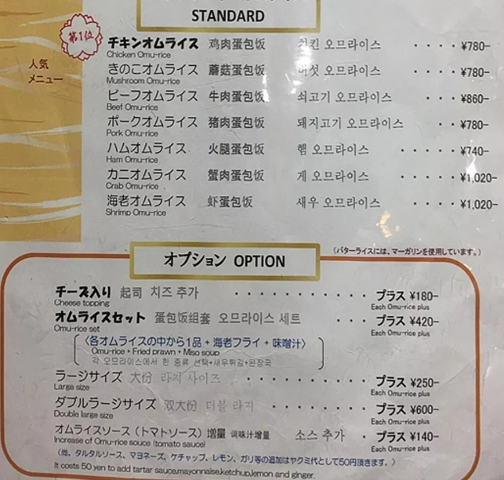
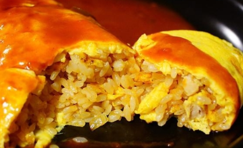
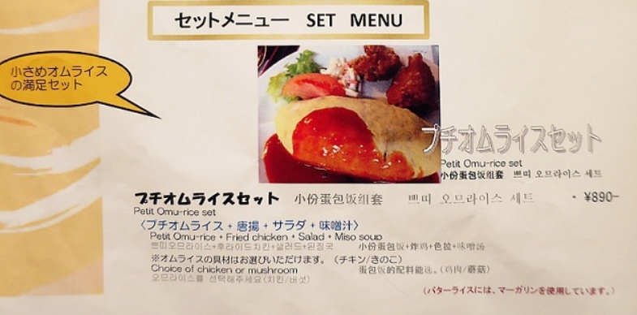
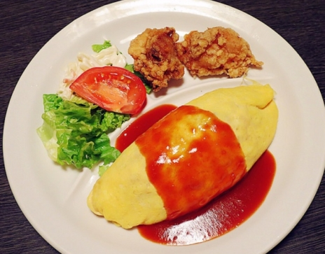
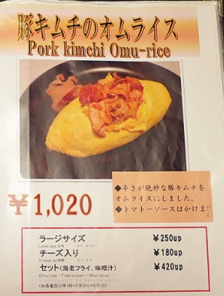
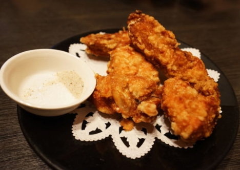
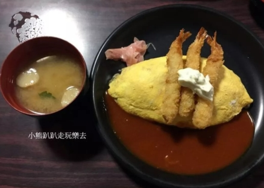

北極星蛋包飯 本店 [官網]
營業時間：11:30~22:00 (LO: 21:30)

入內要脫鞋子, 放進鞋櫃之後, 會有親切的店員引導座位

鞋子放入後把牌子抽起，鞋櫃就上鎖了

有中文菜單(飲料要另外點)

雞肉蛋包飯 780


小份蛋包份套餐 890
可選擇雞肉 or 蘑菇口味
還會附上炸雞, 通心粉沙拉與味噌湯

泡菜豬肉蛋包飯 1020

若雞唐揚からあげ (炸雞)5個 900

加味噌湯+3隻炸蝦 420 不推 勿點
